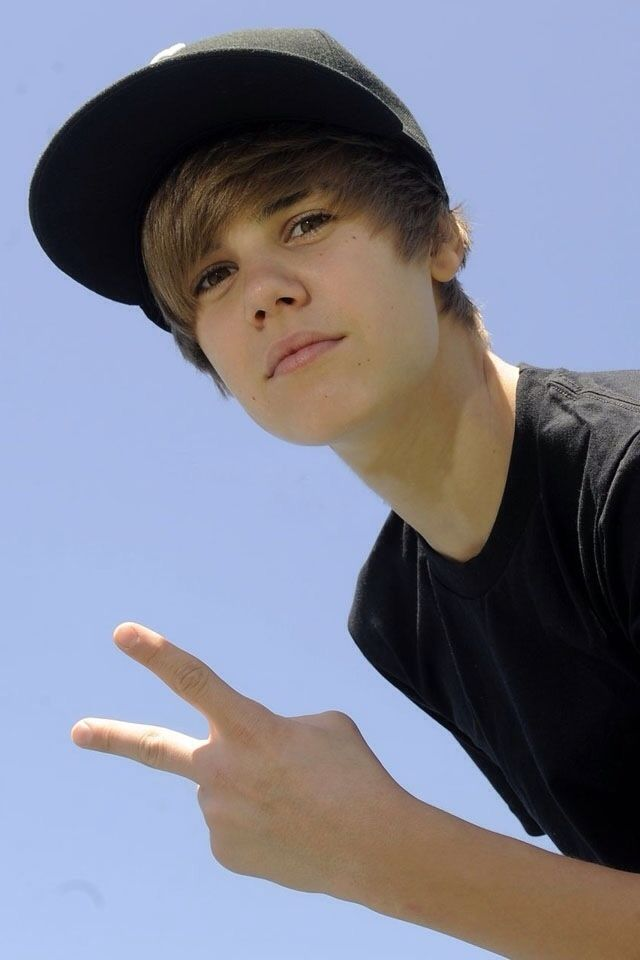

Paragraf pertama dan kedua
Justin Drew Bieber (/ˈbiːbər/; lahir 1 Maret 1994)[1][2] adalah seorang penyanyi dan penulis lagu berkebangsaan Kanada. Setelah manajer pencarian bakat Scooter Braun menemukannya melalui video-video YouTube-nya, ketika sedang menyanyikan ulang lagu pada tahun 2007, ia lalu dikontrak oleh RBMG, Bieber merilis album mini debutnya, My World, pada tanggal 17 November 2009. Album ini disertifikasi platinum di Amerika Serikat.[3] Bieber menjadi artis pertama yang mempunyai 7 lagu dari rekaman debut di tangga lagu Billboard Hot 100.[4] Bieber merilis album studio penuh pertamanya, My World 2.0, pada tahun 2010. Album ini debut di atau hampir di nomor satu di beberapa negara, disertifikasi tiga kali platinum di Amerika Serikat,[3] dan menghasilkan singel "Baby".
Mengikuti album debut dan tur promosinya, dia merilis film konser 3D Justin Bieber: Never Say Never dan album studio keduanya, Under the Mistletoe (2011), yang debut di nomor satu di Billboard 200. Album studio ketiganya, Believe (2012) menghasilkan single "Boyfriend", yang berada di nomor satu di Kanada. Album studio keempatnya Purpose dirilis pada tahun 2015, menghasilkan 3 single nomor 1: "What Do You Mean?", "Sorry", dan "Love Yourself". Setelah itu, Bieber menjadi fitur di berbagai kolaborasi sukses, termasuk "Cold Water", "Let Me Love You", "Despacito (Remix)", dan "I'm the One". Penjualan album dan singlenya di AS mencapai total 44,7 juta.[3][5] Dia diperkirakan telah menjual 140 Juta rekaman, membuatnya menjadi salah satu dari artis musik terlaris di dunia, dan menjadi orang kedua yang mempunyai 100 juta pengikut di Twitter pada bulan Agustus 2017 setelah Katy Perry.
Bieber telah memenangkan berbagai penghargaan sepanjang kariernya, termasuk American Music Award sebagai Artist of the Year pada tahun 2010 dan 2012, sebuah Grammy Award sebagai Best Dance Recording untuk lagu "Where Are Ü Now", dan sebuah Latin Grammy Award.[6] Dia telah berada dalam 10 besar daftar most powerful celebrities in the world versi majalah Forbes, pada tahun 2011, 2012, dan 2013.[7] Pada tahun 2016, Bieber menjadi artis pertama yang melewati total 10 miliar penonton di Vevo.[8]
Paragraf ketiga
Bieber lahir pada tanggal 1 Maret 1994, di London, Ontario, di St. Joseph Hospital[9] dan dibesarkan di Stratford, Ontario.[10] Bieber adalah anak tunggal dari Jeremiah Jack Bieber dan Patricia "Pattie" Mallette. Orang tua Bieber tidak pernah menikah.[11] Mallette, yang masih di bawah umur saat melahirkan, membesarkan putranya dengan bantuan ibunya, Diana, dan ayah tirinya, Bruce[12] Ibunya adalah keturunan Prancis; ayah kakek buyutnya adalah keturunan Jerman, dan keturunan lain Bieber adalah Inggris, Skotlandia dan Irlandia.[13][14][15] Dia juga menyatakan bahwa dia memiliki beberapa keturunan Aborigin-Kanada.[16]
Melalui Jeremy, Bieber mempunyai tiga adik tiri. Jeremy dan mantan pacarnya yang bernama Erin Wagner mempunyai dua anak, seorang putri bernama Jazmyn (lahir 2009), dan seorang putra bernama Jaxon (lahir 2010). Mereka berpisah setelah tujuh tahun berhubungan pada tahun 2014.[17] Jeremy kemudian menikahi tunangannya bernama Chelsey pada bulan Februari 2018 dan melahirkan putri mereka, Bay (lahir pada bulan Agustus 2018).
Paragraf keempat
.[18][19] Bieber juga mempunyai seorang adik tiri perempuan bernama Allie, putri dari ibu tirinya.[20] Pattie bekerja di kantor sebagai pegawai berpenghasilan rendah, membesarkan Bieber sebagai ibu tunggal di perumahan dengan harga sewa murah. Bieber tetap mempertahankan kontak dengan ayahnya.[21]
Bieber memasuki sekolah dasar berbahasa Prancis di Stratford, Jeanne Sauvé Catholic School. Tumbuh, ia belajar bermain piano, drum, gitar, dan terompet.[10][22] Dia lulus sekolah menengah atas di Stratford, Ontario, dari St. Michael Catholic Secondary School pada tahun 2012[23] dengan IPK 4.0.[24] Pada awal tahun 2007, saat berusia 12 tahun, Bieber menyanyikan lagu Ne-Yo berjudul "So Sick" untuk sebuah kompetisi menyanyi lokal di Stratford dan berada di urutan kedua.[22][25] Mallette mengunggah sebuah video penampilan Bieber di YouTube untuk keluarga dan teman-teman mereka agar dapat melihatnya. Dia terus mengunggah video Bieber bernyanyi berbagai lagu R&B, dan popularitas Bieber di situs itu tumbuh.[26] Pada tahun yang sama, Bieber membuat pertunjukan di depan Avon Theatre selama musim turis.